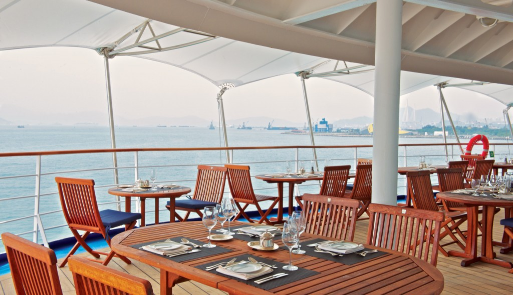
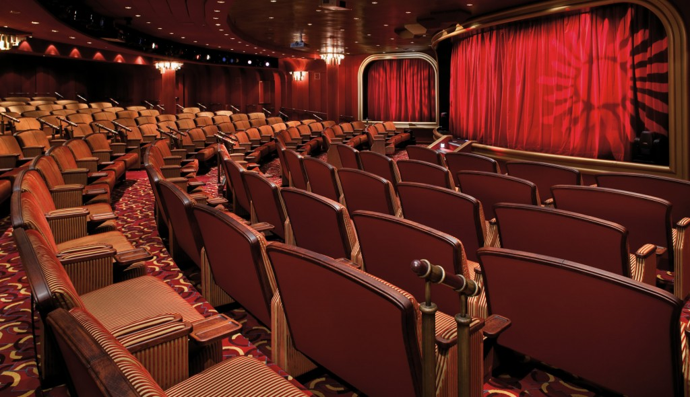

NEW YORK and EASTERN CARIBBEAN CRUISE AND STAY
Sailing onboard 'Oasis of The Seas'
The Oasis of the Seas is one of Royal Cruises most luxurious and well appointed ships. With seven distinct and vibrant neighbourhoods, including the stunning Central Park with its abundance of plant life and greenery, this Ship offers a level of variety and choice that is hard to find anywhere else. This cruise holiday offers you so many options between leisurely, relaxing pursuits and high-energy activities that it may be difficult to know where to start. You can stroll the onboard Boardwalk and check out the colourful hand-crafted carousel or head for a relaxing treatment at the Spa, take in a high-flying show at the Show Lounge, relax with a book in the Library and a look at the stunning views in the adults-only Le Champagne or grab a cold drink at the Bar. Aboard this ship you really are spoiled for choice when it comes time to dining. The Bar, The Restaurant, La Terrazza and the Pool Bar are just some of the many great restaurants you can choose from.
LaTerrazza
LeChampagne

Panorama Lounge

LaTerrazza

ShowLounge
Library

Day 1 - Fort Lauderdale, Florida
America's Venice has everything you need to float your boat. Get up close to alligators on an airboat ride in the Everglades, promenade with the locals along uber-trendy Las Olas Boulevard, or tour its canals by boat.
Day 2 - Nassau Bahamas
Long after you return home, you'll continue to hear the sweet reverberations of Bahamian steel drums, their carefree melodies transporting you to a place where you're perpetually on holiday.
Day 3 - At sea
Day 4 - Charlotte Amalie, St. Thomas
The past still echoes on in this lush West Indies jewel Call on Fort Christian to picture life in the Dutch colonial era, or take advantage of the unrivalled duty-free shopping and sun-soaked beaches.
Day 5 - Philipsburg, St. Maarten
An island with a split personality. Start your day in this laid-back Dutch capital, then cross the island to the delightful French capital, Marigot. Enjoy its chic shops, market and sidewalk cafes, before heading back for a swim at Orient Beach.
Days 6 and 7 - At sea
Day 8 - Fort Lauderdale, Florida
Included in this cruise
- Spacious suites - over 85% with private verandas
- Personalised service - nearly one crew member for every guest
- Butler service in every suite - all guests are pampered equally
- Open-seating dining options - dine when and with whomever you please
- Diversity of dining venues - casual, romantic, regional delicacies, and gourmet cuisine inspired by Relais and Chateaux
- Beverages in-suite and throughout the ship - select wines, premium spirits, specialty coffees and soft drinks, plus your own tailored mini-bar
- In-suite dining and 24-hour room service - always complimentary, always available
- Sophisticated entertainment from live music to production shows
- Enrichment lecturers, acclaimed chefs and destination consultants
- Complimentary transportation into town in most ports
- Gratuities always included in your fare
- Free WiFi throughout the ship; unlimited in select suite categories
Hotel Stay Fitzpatrick's Grand Central, New York
Includes: Return Flights from Dublin including all internal USA Flights, 3 Nights Room Only Stay at The Fitzpatrick's Grand Central, New York, 7 Night Full Board Cruise onboard Oasis of The Seas
Prices from EURO 1735pp
Departure Dates and Sailings - 7 Night Eastern and Western Caribbean departing between Jan - Dec 2016.